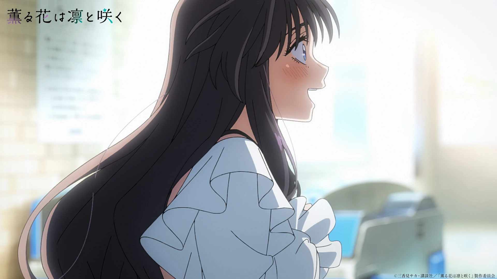
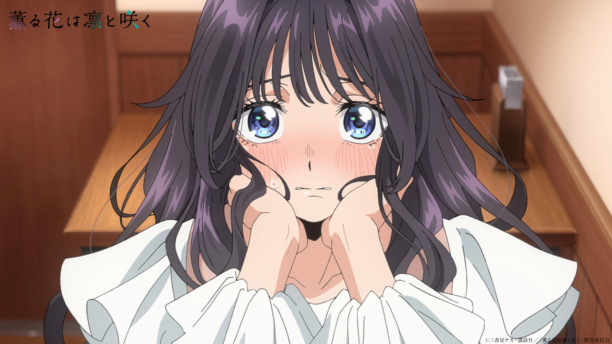

薫る花は凛と咲く · THE FRAGRANT FLOWER BLOOMS WITH DIGNITY
和栗薫子
Kaoruko Waguri — heroine yang lembut, tulus, dan apa adanya.
SCROLL ↓
01 — CERITA
Bunga yang Mekar dengan Martabat
Scroll — kata-katanya menyala mengikutimu.
Rambut bergelombang panjang. Senyum hangat yang menenangkan. Menilai orang dari ketulusannya — bukan dari penampilan. Di hadapannya, dinding antar dunia runtuh satu per satu.
Kaoruko Waguri adalah heroine utama «Kaoru Hana wa Rin to Saku». Siswi Akademi Kikyo yang dikenal baik dan manis — dan serius soal makanan enak.
02 — ARTEFAK 3D
Benih Hana
Scroll — kamera mendekat, artefak berputar, cahaya berubah. Arahkan kursor untuk menggeser cahaya. Seret ruang kosong untuk memutar artefak.
BABAK I — PENDEKATAN
Kamera Menemukan Bentuk
Dari jauh hanya cahaya ungu di kegelapan. Semakin kamu scroll, semakin dekat — geometri mulai terbaca, kelopak menari lebih liar mengikuti kecepatan scroll-mu.
BABAK II — ORBIT
360 Derajat Ketulusan
Kamera mengorbit penuh. Artefak berputar dua setengah putaran, cahayanya memanas dari ungu ke krem. Coba seret mouse — artefak menurut, lalu kembali sendiri ke pose scroll-nya.
↔ seret di ruang kosong untuk memutar
BABAK III — MEKAR
Cahaya Penuh
Di titik terdekat, emissive menyala maksimal dan kelopak berputar dalam badai lembut. Lalu kamera mundur — memberi ruang untuk transformasi berikutnya.
03 — TRANSFORMASI
Dari Geometri ke Manusia
Scroll — still resmi membesar dan tersibak dari kegelapan.

Abstraksi selesai. Yang tersisa: dia.
Still resmi episode 1 · sumber: Kaoru Hana Wiki (Fandom)
04 — GALERI
Momen-momen
Scroll untuk geser · klik gambar untuk inspeksi.



05 — PENUTUP
薫る花は凛と咲く
Kelembutan bukan kelemahan. Ketulusan bukan kepolosan.
Waguri mekar — dengan martabat.
Sumber
- Gambar: stills & ilustrasi dari Kaoru Hana Wiki (Fandom) — Galeri Kaoruko Waguri
- Profil & pengisi suara: kaoruhana-anime.com/character (official)
- 3D: Three.js r160 (di-vendor lokal) · WebGL real-time, bukan CSS